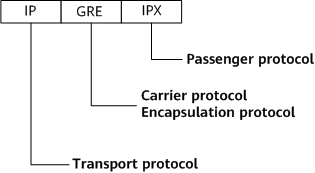

GRE Fundamentals
Background
A single network protocol, such as IPv4, is often used to transmit packets on a backbone network, whereas other network protocols, such as IPv6 and IPX, may be used to transmit packets on non-backbone networks. If the backbone and non-backbone networks use different protocols, packets cannot be transmitted between them. GRE solves this issue by providing a mechanism for transporting the packets of one protocol over another protocol through encapsulation.
In Figure 1, networks 1 and 2 are the non-backbone networks running Novell IPX, and networks 3 and 4 are the non-backbone networks running IPv6. The backbone network is an IPv4 network. To transmit packets between networks 1 and 2 and between networks 3 and 4 over the backbone network, GRE can be used to establish a tunnel between DeviceA and DeviceB. When DeviceA receives a packet from network 1 or network 3, it encapsulates the packet into a GRE packet, which is then encapsulated into an IPv4 packet and forwarded through the established tunnel to network 2 or network 4.
Related Concepts
GRE packet format
After receiving the packet of a specific network layer protocol (for example, IPX) that needs to be encapsulated and routed, the system adds a GRE header to the packet and encapsulates it into the packet of another network protocol, such as IP. The packet can then be forwarded by the IP protocol. Figure 2 shows the format of an encapsulated GRE packet.
Payload: an inner packet that needs to be encapsulated and transmitted to a destination network.
Passenger protocol: the protocol that requires encapsulation.
Encapsulation protocol: the protocol used to encapsulate the passenger protocol, also known as the carrier protocol.
Transport protocol: the protocol used to transmit encapsulated packets.
The following shows the format of an IPX packet encapsulated for transmission over an IP tunnel.

GRE header
Figure 4 shows the format of a GRE header.
The following describes the fields in a GRE header:
C: checksum present bit. If set to 1, the Checksum field is present in the GRE header. If set to 0, the Checksum field is not present in the GRE header.
K: key present bit. If set to 1, the Key field is present in the GRE header. If set to 0, the Key field is not present in the GRE header.
Recursion: number of GRE encapsulations. This field is incremented by 1 after each GRE encapsulation. If the number of GRE encapsulations is greater than 3, the packet is discarded. This field prevents packets from being infinitely encapsulated.

The Recursion field defaults to 0.
If the field values on the transmit end and receive end are different, no error will occur, and the receive end will ignore the field.
This field takes effect only during GRE encapsulation. When a device decapsulates a GRE packet, it is unaware of this field.
Flags: reserved field. Currently, the field value must be set to 0.
Version: version field. The field value must be 0.
Protocol Type: passenger protocol type.
Checksum: checksum of the GRE header and the payload.
Key: key field. It is used by the receive end to authenticate received packets.
Currently, a GRE header does not contain the source route field. As such, Bits 1, 3, and 4 are all set to 0.
Packet Transmission over a GRE Tunnel
Packet transmission over a GRE tunnel consists of both encapsulation and decapsulation. In Figure 5, a private network packet from the ingress PE to the egress PE is encapsulated on the ingress PE and decapsulated on the egress PE.
Encapsulation
The ingress PE receives a private network packet from an interface connected to a private network, and delivers the packet to the protocol module running on the private network for processing. The VPN protocol module searches the VPN routing or forwarding table for an outbound interface based on the destination address carried in the VPN packet header. If the outbound interface is a GRE tunnel interface, this module sends the packet to the tunnel module.
The tunnel module processes the received packet as follows:
Adds a GRE header to the packet. Specifically, the tunnel module encapsulates the packet according to the passenger protocol type of the packet and the key parameter configured for the current GRE tunnel.
Adds a transport protocol header (an IP header) to the packet based on the configuration (with the transport protocol IP). The source and destination addresses contained in the IP header are the tunnel's source and destination addresses, respectively.
Delivers the packet to the IP module. The IP module searches the public network routing table for the outbound interface and forwards the packet based on the destination address in the IP header. The encapsulated packet is then transmitted on the IP public network.
Decapsulation
The decapsulation process is opposite to the encapsulation process. After the egress PE receives the packet, the egress PE analyzes the IP header. After determining that the destination of the packet is itself and the Protocol Type field is 47, which indicates that the protocol is GRE, the egress PE delivers the packet to the GRE module for processing. The GRE module removes the IP header and GRE header, determines that the passenger protocol is a private network protocol based on the Protocol Type field in the GRE header, and delivers the packet to the private network protocol. The private network protocol then forwards the packet as an ordinary packet.
Automatic TCP MSS Adjustment
Devices support dynamic adjustment of the maximum segment size (MSS) for SYN or SYN-ACK packets during TCP connection setup.
Background
A SYN or SYN-ACK packet transmitted during TCP connection setup may contain an MSS option field that specifies the MSS value on the local device. After the local and remote devices exchange and compare their MSS values, they forward packets based on the smaller MSS value to prevent packets from being fragmented on the network. Provided that packets remain unfragmented, a larger MSS value allows a greater amount of data to be sent per segment, increasing network efficiency. MSS adjustment can minimize the possibility of packet fragmentation and increase reliability for transmission of large data packets, improving end-to-end TCP transmission efficiency.
Implementation
If a SYN or SYN-ACK packet does not contain an MSS field, the device automatically inserts an appropriate MSS value:
MSS = MTU – 40 – APPENDLEN
In the MSS value, MSS indicates the automatically inserted MSS value, MTU indicates the maximum transmission unit (MTU) of an interface, and APPENDLEN indicates the packet length added during VPN encryption and encapsulation.
- If a SYN or SYN-ACK packet contains an MSS field, the device compares MSS-APPENDLEN with MTU-40-APPENDLEN and adjusts the MSS value accordingly:
- If MTU-40-APPENDLEN is greater than MSS-APPENDLEN, the device retains the original MSS value.
- If MTU-40-APPENDLEN is less than MSS-APPENDLEN, the device uses MTU-40-APPENDLEN as the new MSS value.
Restrictions
- The MTU values of the interfaces that VPN packets pass through must be the same.
- Automatic TCP MSS adjustment is performed only when the MTU value of the outbound interface ranges from 256 to 9600 bytes.